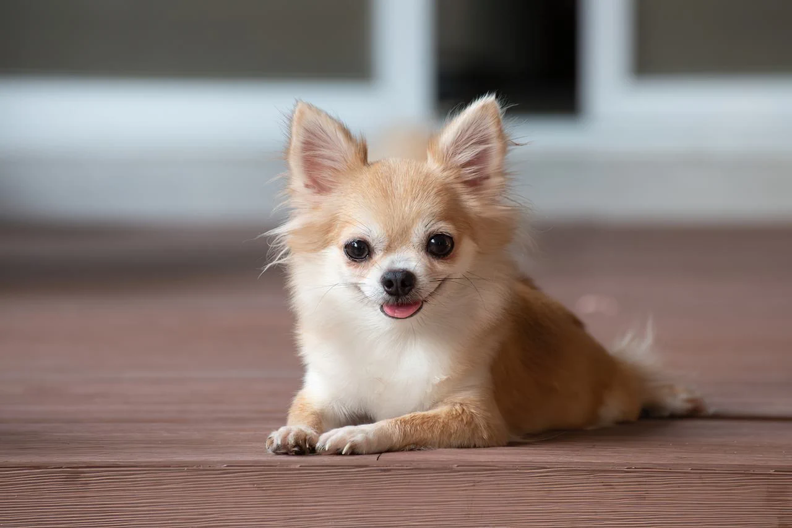

O chihuahua é uma das menores raças de cães do mundo. Ele é pequeno, ágil e muito alerta, conhecido por ser corajoso apesar do tamanho. Costuma ser apegado ao dono, desconfiado com estranhos e bastante expressivo. Pode ter pelagem curta ou longa e é um cão ativo, inteligente e cheio de personalidade.
O JOHN WICK é um ex-assassino profissional conhecido por sua habilidade letal, precisão e frieza. Reservado e determinado, ele volta ao mundo do crime movido por vingança e lealdade, tornando-se uma lenda temida no submundo por sua eficiência implacável e código de honra próprio.